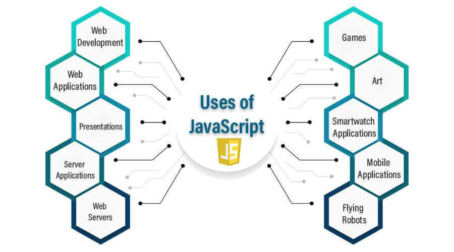

Mi az a JavaScript?
A JavaScript egy dinamikus, magas szintű programozási nyelv, amely alapvető szerepet játszik a webfejlesztésben. A nyelvet az 1990-es évek közepén fejlesztették ki, és azóta a legelterjedtebb nyelvvé vált, amit a böngészőkben futtatunk, hogy interaktívvá tegyük a weboldalakat.

A JavaScript az egyik legfontosabb eszköz a modern weboldalak dinamikus működtetésében. A nyelv lehetővé teszi a felhasználói interakciók figyelését, a tartalom dinamikus frissítését és az oldalak aszinkron módon történő kommunikálását a szerverekkel.
A JavaScript fő jellemzői:
- Interaktivitás a weboldalakon: A JavaScript lehetővé teszi a felhasználói interakciók, mint például gombnyomások, űrlapbejegyzések és egyéb események feldolgozását, ezáltal dinamikus és interaktív weboldalakat készíthetünk.
- DOM manipuláció: A JavaScript lehetőséget ad arra, hogy módosítsuk a weboldalon található HTML elemeket anélkül, hogy újratöltenénk az oldalt. A DOM (Document Object Model) az a struktúra, amelyen keresztül hozzáférhetünk az oldal összes eleméhez.
- Aszinkron működés: A JavaScript támogatja az aszinkron műveleteket, amelyek lehetővé teszik, hogy a weboldalak adatokat töltsenek le a szerverről, miközben a felhasználó továbbra is interakcióban maradhat az oldallal. Ezt a funkciót az AJAX vagy a Fetch API biztosítja.
- Széles körű támogatottság: A JavaScript-nek hatalmas közössége van, amely számos könyvtárt, keretrendszert és eszközt kínál, amelyek megkönnyítik a fejlesztést. Ilyen például a React, Angular és Vue.js, amelyek segítenek az összetettebb webalkalmazások felépítésében.
- Funkcionális és objektumorientált programozás: A JavaScript támogatja a funkcionális és az objektumorientált programozási paradigmákat is, így a fejlesztők rugalmasan választhatják meg a számukra legmegfelelőbb kódstruktúrát.
A JavaScript szerepe a modern webfejlesztésben:
A JavaScript a modern webfejlesztés alapvető része. Lehetővé teszi a felhasználói élmény dinamikus növelését, különösen az interaktivitás és az aszinkron adatkezelés terén. A nyelvet nemcsak a frontend fejlesztésben, hanem a backend fejlesztésben is alkalmazzák, például a Node.js keretrendszeren keresztül, ami lehetővé teszi JavaScript futtatását a szerveren is.

Ma már szinte minden webalkalmazás tartalmaz JavaScript-et. A modern weboldalak gyakran használnak JavaScriptet a felhasználói interakciók, az animációk, a dinamikus tartalom frissítése és a különböző adatfeldolgozási feladatok végrehajtása érdekében. Az egyszerű HTML oldalak, mint például a statikus weboldalak, is egyre inkább átadnak helyet a JavaScript-tel épített, dinamikus webalkalmazásoknak, amelyek a felhasználói élményt fokozzák.
Miért tanulj JavaScript-et?
Ha érdekel a webfejlesztés, a JavaScript alapvető nyelv, amit mindenképpen meg kell tanulnod. Ezen kívül számos egyéb lehetőséget kínál, mint például az alkalmazásfejlesztés, a szerveroldali fejlesztés és az automatizált feladatok végrehajtása. A JavaScript különböző eszközei és keretrendszerei szinte minden iparágban használatosak, így alapvető eszközzé vált a fejlesztők számára.
